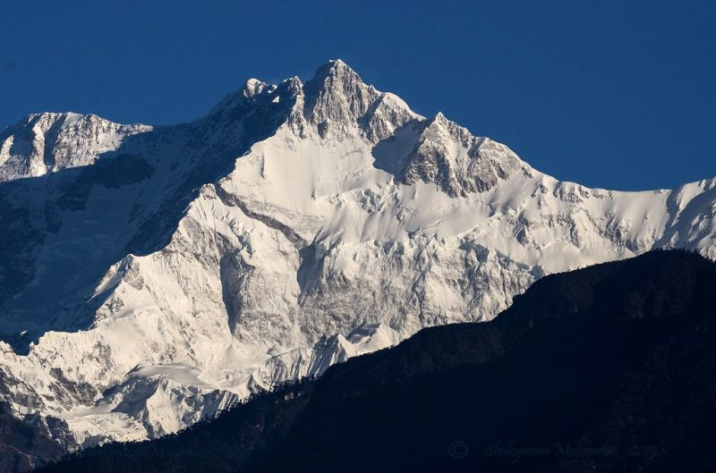
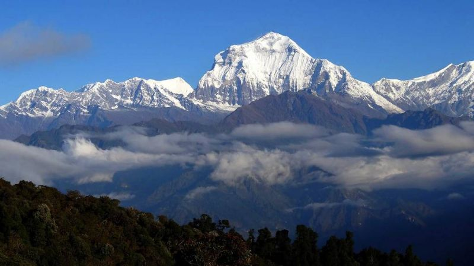
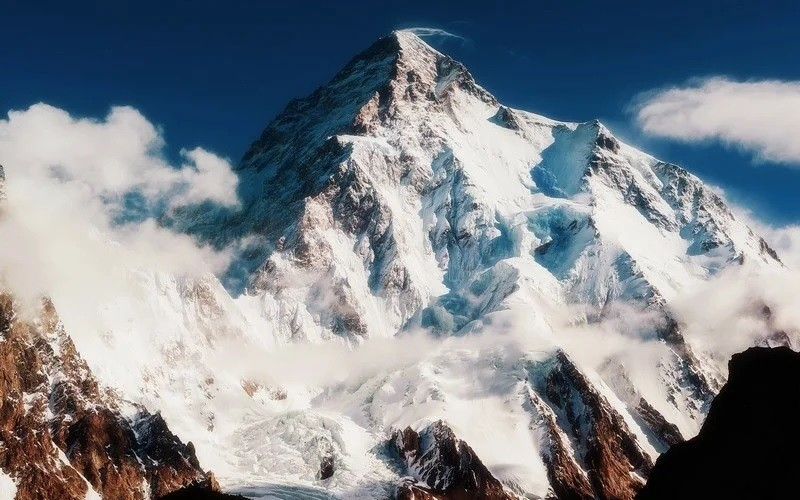

Топ 5 найсмертоносніших вершин світу
5. Канченджанґа 8586 м
Показник смертності 12,7%. Відкриває наш рейтинг вбивця жінок - Канченджанга, третій восьмитисячник після Евересту і К2. Знаходиться у віддаленому районі. Гора завоювала дуже страшну славу саме серед жінок. Чомусь чоловіків вона пускає до себе, а протилежну стать в основному вбиває. Всього дуже мало жінок, які піднялися і спустилися живими, тому тривалий час вершина була неприступна саме для жіночої половини людства.
4. Дхаулагірі 8167 м
Показник смертності 15,6%. Примітно, що незважаючи на невелику висоту (сьома вершина світу), Дхаулагірі вважається одним з найскладніших восьмитисячників за класичним маршрутом. Причиною тому в першу чергу є лавини, а також падіння і зриви, так як маршрут проходить по дуже крутому схилу. Навесні погодні умови для сходжень більш сприятливі, восени трохи гірше.
3. Чогорі (К2) 8611 м
Показник смертності 19%. Найчастіше вершина К2 (друга вершина світу) займає топ рейтингів серед найнебезпечніших гір. Частково це виправдано, так як смертність до недавнього часу становила 42%. Тобто практично кожен другий, який відправляється на штурм вершини, не повертався з неї.
2. Нанга Парбат 8126 м
Показник смертності 21%. Пакистанська
вершина,
дев'ятий
восьмитисячник світу. Частина загиблих не з вини гори. Справа в тому, що в
Пакистані часто неспокійна політична ситуація. У 2013 році частину базового
табору розстріляли місцеві таліби. На жаль, загинуло багато альпіністів, в
тому числі і троє українців. Всі вони також включені в показник смертності
гори. Якщо не враховувати теракт, то основними причинами смерті
на
Нанга
Парбат також є лавини і падіння зі стіни. До слова, Діамірська долина
вважається одним з найкрасивіших місць, де розташований базовий табір. Це
велика зелена територія, над якою височить трикілометрова Діамірська стіна.
1. Аннапурна І 8091 м
Показник смертності 26,7%. Перше місце в
рейтингу найбільш
смертоносних вершин займає Аннапурна I. Гора замикає десятку найвищих
вершин світу, але до сих пір є найнебезпечнішою. За весь час на її піку
успішно побували тільки 266 чол - це найменша кількість альпіністів серед
усіх восьмитисячників. Основна причина смертності - лавини. Але в той же
час - це перший восьмитисячник, на який вдалося піднятися людині.
Перше
вдале сходження зробив Моріс Ерцог в 1950 році.
Ну і ще скажу про одну вершину - пік Перемоги.
Це фактично найпівнічніший семитисячник. Вважається дуже важкою горою.
Але за тією статистикою, що
вдалося знайти, приблизно 900 чол було на вершині
і 70 загинуло
(смертність
7,8%). Тому в рейтинг топ-5 смертоносних вершин пік Перемоги не входить.
Хоча в деякі роки піднятися на вершину не вдається нікому і при цьому люди
гинуть.